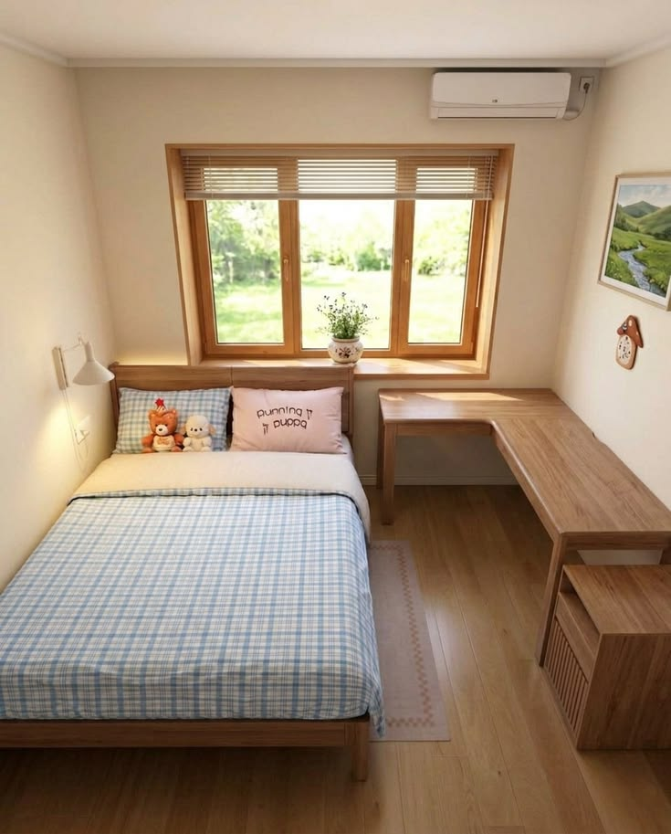

Individual
Quarto Sereno
Espaço reservado para descanso individual, ideal para quem busca silêncio, privacidade e conforto entre consultas, exames ou procedimentos.
📍 Próximo ao IMIP
🛏️ Acomodação individual
🌙 Ambiente reservado